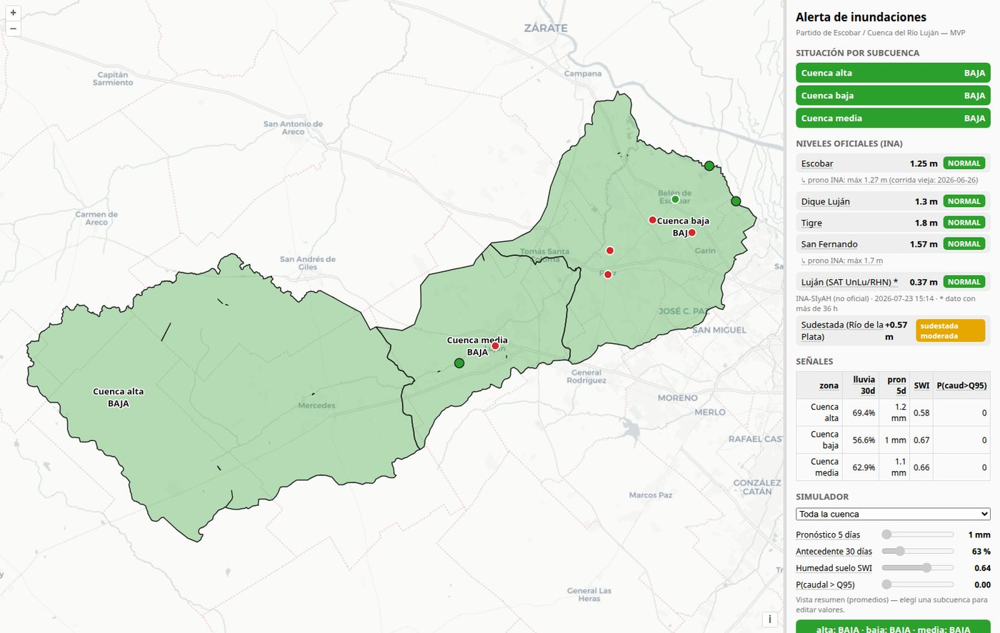
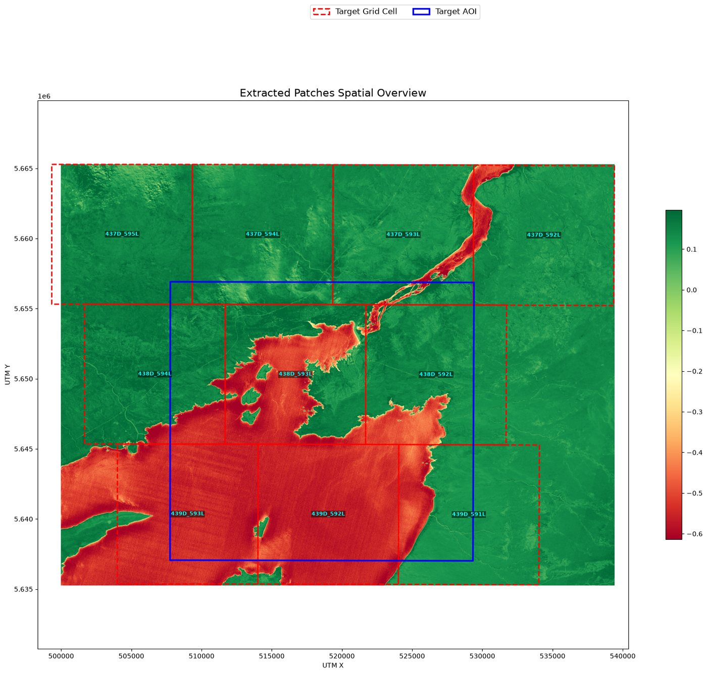
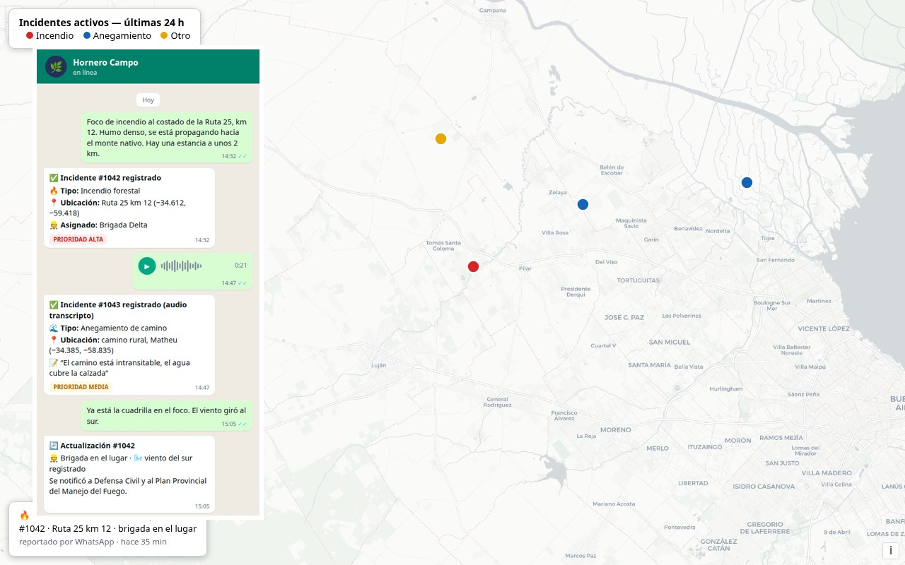
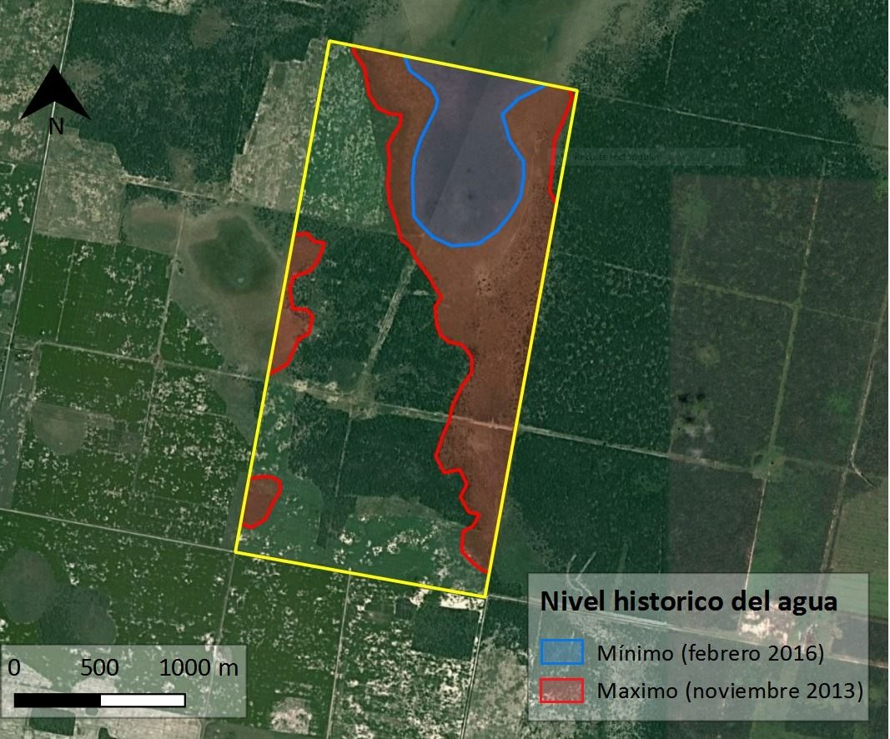
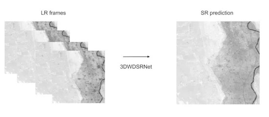

01
Teledetección aplicada
Procesamiento de imágenes Sentinel-1/2, Landsat y reanálisis climáticos para detectar agua, inundaciones y cambios en el territorio.
Teledetección · Machine learning · Ciencias ambientales
Somos una consultora de ciencias ambientales y machine learning. Convertimos datos satelitales en herramientas concretas para anticipar y gestionar inundaciones.
Qué hacemos
Cubrimos el ciclo completo: adquisición y procesamiento de datos, modelado predictivo y entrega de plataformas listas para operar.
01
Procesamiento de imágenes Sentinel-1/2, Landsat y reanálisis climáticos para detectar agua, inundaciones y cambios en el territorio.
02
Modelos predictivos sobre series temporales satelitales, validados contra eventos históricos documentados.
03
Sistemas de alerta temprana por subcuenca, integrados con redes hidrométricas oficiales.
04
Tableros web con mapas interactivos y reportes automatizados para equipos de emergencias y planificación.
Trabajos realizados
Análisis de riesgo de inundaciones, datasets multi-constelación, reportes de campo por WhatsApp, diagnósticos hídricos para el agro y super resolución satelital.





Quiénes somos
Combinamos investigación en inteligencia artificial, ciencias ambientales y gestión territorial para llevar la observación de la Tierra a decisiones concretas.
Machine Learning & IA
Investigador y líder en ciencia de datos con más de 10 años aplicando IA a problemas de alto impacto: observación de la Tierra, teledetección e imagen médica. Participó del Frontier Development Lab (programa junto a NASA y ESA), con publicaciones científicas y premios en competencias internacionales de IA (ESA Kelvins, Santander, Sadosky). Especialista en deep learning, visión por computadora, modelos multimodales e infraestructura cloud (AWS/GCP).
GIS & Ciencia de Datos Ambiental
Licenciado en Ciencias Ambientales y Magíster en Recursos Naturales (UBA), especializado en teledetección óptica y SAR, modelado ambiental y automatización de pipelines geoespaciales. Responsable técnico de productos satelitales para detección temprana de incendios, con experiencia en el Servicio Meteorológico Nacional y docencia universitaria en modelado estadístico.
Gestión Ambiental & Territorio
Licenciado en Ciencias Ambientales (UBA) con más de 20 años en restauración ecológica y adaptación al cambio climático en los ámbitos público, privado y de la sociedad civil. Intendente del Parque Nacional Ciervo de los Pantanos, director de restauración en ONG ambientales y coordinador de programas de gestión hídrica y ordenamiento territorial. Coordinó equipos interdisciplinarios de más de 30 personas y diseñó cientos de propuestas de conservación en Latinoamérica.
Contacto
¿Necesitás monitorear una cuenca, evaluar riesgo de inundación o desarrollar una solución de teledetección a medida? Escribinos y te respondemos a la brevedad.
Escribinos a info@hornerolabs.com